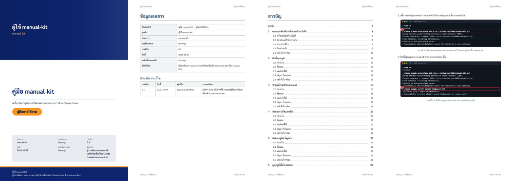
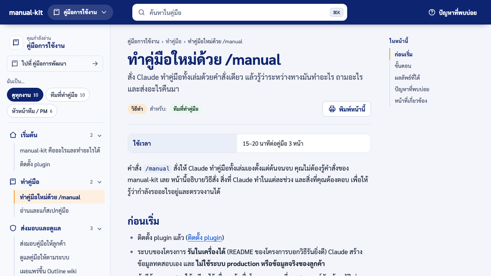

manual-kit คืออะไรและทำอะไรได้
เครื่องมือที่ให้ Claude Code ทำคู่มือการใช้งานระบบแบบทางการ (PDF, Word, เว็บ) จากโค้ดและระบบที่รันจริง แล้วคอยตรวจว่าคู่มือยังตรงกับระบบ
- สำหรับ
- ทีมที่ทำคู่มือ หัวหน้าทีม / PM
- ใช้เวลาอ่าน
- 5 นาที
manual-kit ช่วยทีมทำ คู่มือการใช้งานระบบแบบทางการสำหรับส่งลูกค้า โดยให้ Claude Code เป็นคนทำงานแทบทั้งหมด: อ่านโค้ดและเอกสารของโครงการ เขียนสเปกคู่มือ รันระบบในเครื่องด้วยข้อมูลสมมติ เขียนเนื้อหา ถ่ายภาพหน้าจอ แล้วออกไฟล์ PDF, Word และเว็บคู่มือ หน้าที่ของคนเหลือแค่สั่งงาน อ่านทวน และรับรองก่อนส่ง
ทำไมต้องมีเครื่องมือนี้
คู่มือที่เขียนด้วยมือมักมีปัญหาเดิมซ้ำ ๆ คือ เขียนเสร็จแล้วระบบเปลี่ยน ชื่อปุ่มในคู่มือไม่ตรงกับหน้าจอ หน้าจอใหม่ไม่มีใครเขียน และภาพหน้าจอเก่า manual-kit แก้ด้วยการผูกคู่มือไว้กับโค้ด: ทุกหน้าบอกว่าข้อเท็จจริงมาจากไฟล์ไหน ชื่อปุ่มอ้างจากโค้ดแทนการพิมพ์เอง และมีคำสั่งตรวจที่บอกได้ทันทีว่าหน้าไหนต้องแก้เมื่อโค้ดเปลี่ยน คู่มือจึงอยู่ใน repo เดียวกับโค้ดและเปลี่ยนไปพร้อมกันใน merge request เดียวกัน
สองส่วนที่ทำงานร่วมกัน
| ส่วน | ทำอะไร | ทำไมแยกกัน |
|---|---|---|
เครื่องมือ manual-kit |
งานกลไกทั้งหมด: สแกนโค้ด ตรวจ ถ่ายภาพ ออกไฟล์ เผยแพร่ | ไม่เรียก AI ไม่ต้องใช้ API key รันซ้ำได้ผลเดิมทุกครั้ง จึงใช้ใน CI ได้ |
| skill ใน Claude Code | งานที่ต้องใช้วิจารณญาณ: เลือกโครงเล่ม เขียนเนื้อหา เลือกภาพ ตรวจว่าภาพถูก | ความเข้าใจผู้อ่านและภาษาที่อ่านง่ายเป็นงานของคนหรือ Claude ไม่ใช่ของสคริปต์ |
skill มีสองตัว: manual คือขั้นตอนตั้งแต่ต้นจนจบที่เรียกด้วย /manual และ building-product-manuals
คือกติกาการเขียนคู่มือที่ Claude ต้องทำตาม
ทำอะไรได้บ้าง
| ความสามารถ | รายละเอียด |
|---|---|
| สแกนระบบเอง | อ่านเอกสาร requirement / design และโค้ด: หน้าจอ บทบาทและสิทธิ์ ฟอร์ม ข้อความแจ้งเตือน สถานะของงาน API feature flag |
| เขียนสเปกคู่มือ | ผู้ใช้ ความสามารถ ขั้นตอนการทำงาน กฎ แผนหน้าคู่มือ และคำถามที่ต้องยืนยัน ทุกข้อบอกไฟล์ต้นทาง |
| PDF ทางการ | ปก ข้อมูลเอกสาร ประวัติการแก้ไข หน้าอนุมัติ สารบัญมีเลขหน้า สารบัญภาพ หัว-ท้ายกระดาษ ฟอนต์ไทย |
| ไฟล์ Word | ฝังฟอนต์ไทย ตั้งค่าภาษาไทยให้ Word แสดงถูก มีสารบัญ แก้ต่อได้ |
| เว็บคู่มือ | เมนูซ้าย ค้นหาภาษาไทย "ในหน้านี้" ใช้บนมือถือได้ ดาวน์โหลด PDF/Word |
| ภาพจากระบบจริง | ภาพหน้าจอพร้อมกรอบแดงชี้จุดที่ต้องกด ภาพทีละขั้น วิดีโอสั้นพร้อมคำบรรยาย ปิดบังข้อมูลส่วนตัว |
| ตามระบบเมื่อโค้ดเปลี่ยน | บอกว่าหน้าไหนต้องแก้ ชื่อปุ่มไหนหายไป หน้าจอใหม่ไหนยังไม่มีคู่มือ ใช้ใน CI ได้ |
| เผยแพร่ขึ้น wiki | ส่งคู่มือขึ้น Outline wiki พร้อมภาพและไฟล์แนบ |
ตัวอย่างผลลัพธ์จากคู่มือเล่มนี้เอง ซึ่งทำด้วย manual-kit:


ใครทำอะไร
| คุณ | Claude + manual-kit |
|---|---|
พิมพ์ /manual พร้อมบอกสิ่งที่ต้องการ |
อ่าน repo สแกน เขียนสเปก รันระบบด้วยข้อมูลสมมติ เขียนหน้า ถ่ายภาพ ตรวจ ออกไฟล์ เปิดดูผลเอง |
| อ่านสเปก (ถ้าต้องการ) | รายงานไฟล์ที่ได้ รายการ (รอระบุ) และปัญหาของระบบที่เจอระหว่างทำ |
| อ่านทวนทุกหน้า กรอก (รอระบุ) รับรอง แล้วส่งลูกค้า | ไม่รับรองแทนคน |
จากการทดสอบจริง คู่มือ 3 หน้าพร้อมภาพ PDF Word และเว็บ ใช้เวลาราว 15–20 นาที ส่วนการอัปเดตเมื่อระบบเปลี่ยนใช้ไม่กี่นาทีต่อหน้า (ตัวเลขจาก README ของ manual-kit)
หมายเหตุ
คู่มือเล่มนี้ทำด้วย manual-kit เอง: สเปกอยู่ที่ docs/manual/manual-spec.md และทุกหน้ามีรายการไฟล์ต้นทาง
ถ้า manual-kit เปลี่ยน manual-kit check จะบอกว่าหน้าไหนของเล่มนี้ต้องแก้